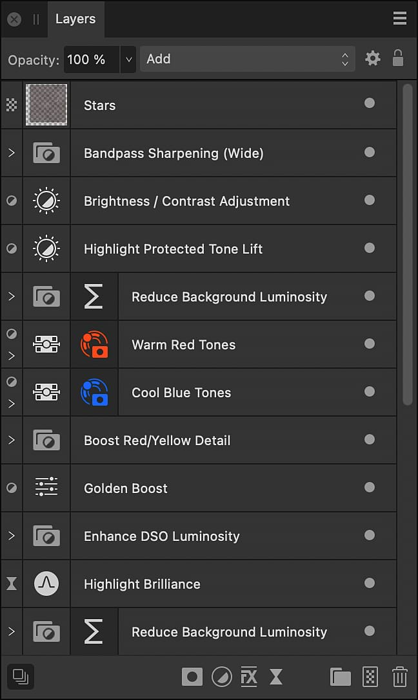

Narrowband astrophotography uses astronomical filters to capture images of light from specific wavelength bands. It is often used to produce images of nebulae. A dedicated astronomy camera tends to be used.
The resulting frames are monochromatic but can be processed by the Astrophotography Stack Persona just like full-color frames.
Several mono images, each taken with a different filter, can be manually composited into a full-color image.
The most commonly used filters detect Hydrogen-alpha (Ha), Oxygen-III (O-III) and Sulfur-II (SII).
An example of composited, full-color narrowband astrophotography.
Before compositing, use the Astrophotography Stack Persona to create three separate images, each from a different astronomical filter's frames.
To ensure you start with a document of the correct properties, including resolution and color format, use one of your already-stacked monochromatic documents as the base on which to perform the following procedure.
Copy and paste a flattened version of each of the other two mono images onto a separate pixel layer in the new document.
For each pixel layer in turn:
Select Layer>New Adjustment Layer>Recolor.
Clip the adjustment layer to the pixel layer. (See Layer Clipping.)
Set the adjustment layer's hue uniquely to red (0°), green (120°) or blue (240°).
Set each pixel layer's blend mode to Add.
Perform additional post-processing work as necessary
There is no universally accepted color assignment for each chemical element, so experiment. For example, the Hubble palette assigns red to S-II, green to Ha, and blue to O-III.
Use your artistic judgment in post-processing. For example, you might:
Perform tone-stretching by applying Brightness/Contrast, Curves and Levels adjustment layers.
Remove distractions with noise reduction filters and retouching tools.
Use a Fill layer with the Subtract blend mode applied to remove a color cast.

After compositing, use additional features to refine the result.